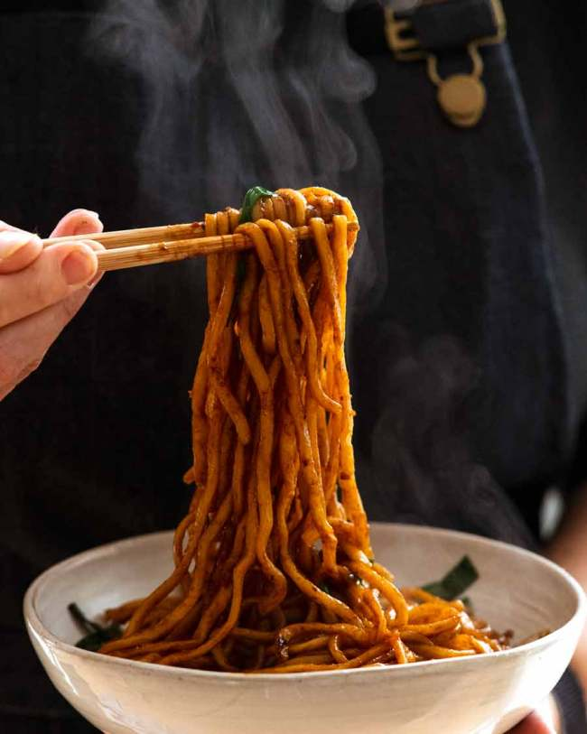

Main Page
Asian Style Noodles

These noodles pack a punch! Loaded with umami and a chewy texture they are a good basis for further
use, or are ready to endulge immediately!
Please note, that there are no measurements, trust your gut.
Ingridients
- noodles
- olive oil
- sesame oil
- light soy sauce
- dark soy sauce
- sweet soy sauce
- salt & pepper
- dark rice vinegar
- MSG
- Chilli
Instructions
- Start by boiling your water without salt. Then add in the noodles and cook al dente.
- Meanwhile combine all the ingridients in a bowl big enough to fit all the noodles. The sauce should taste strong and salty
- Do not drain the noodles, instead transfer them via chopsticks or another kitchen utensil into the sauce.
- Now mix it together till it thickens. Don't wait too long to eat, since the sauce get's absorbed by noodles and it can be too try.
- If you want to use the noodles as a ingridient for another recipe like fried noodles, let them cool and absorb the sauce first.